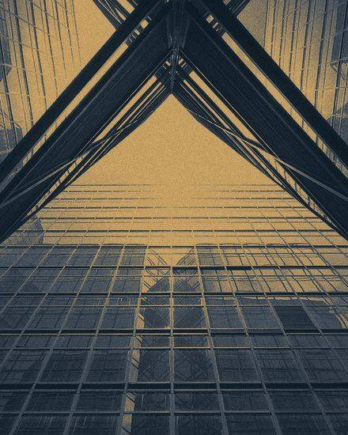

Imagery
Photographs, treated so they belong to the brand.
These are real photographs, already treated. One recipe runs over every image: desaturate, then map shadows to ink, mid-tones to a cool slate and highlights to brass, then a light grain. Four photographs from four different photographers now read as one set. All four are CC0 or public domain — free for commercial use with no attribution required.
Four subjects, four ratios

Architecture
4:5 · hero, leadership
Infrastructure
4:5 · capabilities
Complex operations
4:5 · experience

Systems
4:5 · how we work
Do
- Crop hard. One subject, one idea.
- Leave a quiet corner for type.
- Real places, real work, real light.
- Two to four photographs per page, no more.
- Source CC0 / public domain only.
Don't
- Staged boardrooms or handshakes.
- Glowing brains, circuits, robots.
- Anything with a screen full of charts.
- Photos behind body copy.
The treatment
- Greyscale, then a tritone: #0A1721 shadows, #4A545E mids, #DFAE63 highlights.
- The cool mid-tone is the whole trick — a straight ink-to-brass ramp turns every photo sepia.
- Luminance-only grain, strength 7.
- Square corners. Never a rounded photo.